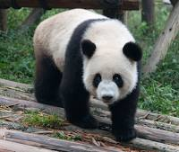

Panda

Pandas are large, iconic bears known for their distinctive black and white coat and bamboo diet.
Physical Characteristics
- Size: Pandas are relatively large bears, with adults typically weighing between 200 to 300 pounds.
- Coat: They have a black and white coat pattern that helps them blend into their forested habitats.
- Paw Structure: Pandas have a specialized bone in their wrist that functions like an opposable thumb, allowing them to grasp bamboo more effectively.
Behavior and Habitat
- Habitat: Pandas are native to the mountainous regions of central China, where they inhabit dense bamboo forests.
- Solitary Behavior: Pandas are solitary animals, coming together mainly during the breeding season.
- Bamboo Dependence: They have a specialized diet of bamboo, which makes up about 99% of their diet. They may also eat small mammals and birds occasionally.
Diet
Pandas are primarily herbivores and rely heavily on bamboo shoots and leaves as their main food source.
Conservation Status
Pandas were once listed as "Endangered," but due to conservation efforts, their status has improved to "Vulnerable." They still face threats from habitat loss and climate change.
Interesting Facts
- Conservation Success: The panda is a symbol of conservation efforts, and programs have been successful in protecting their habitats and increasing their populations.
- Panda Cubs: Panda cubs are born blind and rely on their mother for care and nourishment for several months.
- Slow Reproduction: Pandas have a slow reproductive rate, with females giving birth to only one or two cubs every two years.